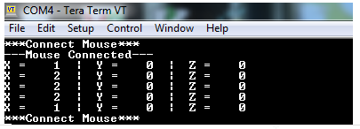

HID Basic Mouse USART Example (hid_basic_mouse_usart)
This application demonstrates the use of the USB HID Host Client Driver to enumerate and operate a HID USB Mouse device.
Description
This application uses the USB Host layer, HID Client driver and HID Mouse Usage driver to enumerate a USB Mouse and detect Mouse button press release events. The Mouse events are displayed using a terminal emulator on a personal computer.
Downloading and building the application
To clone or download this application from Github, go to the main page of this repository and then click Clone button to clone this repository or download as zip file. This content can also be downloaded using content manager by following these instructions.
Path of the application within the repository is usb_apps_host/apps/hid_basic_mouse_usart.
Following table gives the details of project configurations, target device used, hardware and its IDE. Open the project using the respective IDE and build it.
| Project Name | IDE | Target Device | Hardware / Configuration |
|---|---|---|---|
| sam_9x60_ek_iar.IAR | IAR | SAM9X60 | SAM9X60-EK Evaluation Board |
| sam_9x60_ek_freertos_iar.IAR | IAR | SAM9X60 | SAM9X60-EK Evaluation Board |
| sam_a5d2_xult_iar.IAR | IAR | ATSAMA5D27C | SAM A5D2 Xplained Ultra Board |
| sam_a5d2_xult_freertos.IAR | IAR | ATSAMA5D27C | SAM A5D2 Xplained Ultra Board |
| sam_d21_xpro.X | MPLABX | ATSAMD21J18A | SAM D21 Xplained Pro Board |
| sam_e70_xult.X | MPLABX | ATSAME70Q21B | SAM E70 Xplained Ultra Board |
| sam_e70_xult_freertos.X | MPLABX | ATSAME70Q21B | SAM E70 Xplained Ultra Board |
| sam_g55_xpro.X | MPLABX | ATSAMG55J19 | SAM G55 Xplained Pro Board |
Configuring the Hardware
SAM9X60-EK Evaluation Board
- Setup the SD card
- Download harmony MPU bootstrap loader from this location.
- Copy the downloaded boot loader binary (boot.bin) and generated application binary (harmony.bin)into the SD card.
- Insert the SD card into the SDMMC connector J4 on the board.
- Connect the USB port J22 on board to the computer using a micro USB cable (to enable debug com port).
- Jumpers J20, J21 and J13 must be open.
- Jumper J2 and J3 must be shorted.
- Use USB Type A connector (J8) on the board to connect the USB Device to the USB Host.
- LED D1 indicates a Device Connection. (Attached device has been successfully enumerated and configured).
-
Connect J7 to a available USB Host Port to power up the board.

Note: Reset push button on SAM9X60 EK is labeled as SW3
SAM A5D2 Xplained Ultra Board
- Setup the SD card
- Download harmony MPU bootstrap loader from this location
- Copy the downloaded boot loader binary( boot.bin) and generated application binary (harmony.bin)into the SD card
- Insert the SD card into the SDMMC1 slot on the board
- Open the jumper JP2(DEBUG_DIS)
- Connect the Debug USB port on the board to the computer using a micro USB cable
- Use “A5-USB-B” connector(J13 - Type A connector) on the board to connect the USB Device to the USB Host.
- RGB LED indicates a Device Connection. (Attached device has been successfully enumerated and configured).
- A commercially available USB Mouse will be needed.
- The demonstration uses the EDBG Serial Interface to transfer demonstration application messages on a PC.
SAM D21 Xplained Pro Board
- Jumper titled “PA03 SELECT” must be shorted between PA03 and USB_ID(positions 2 and 3)
- Use “TARGET USB” connector on the board to connect the USB Device to the USB Host. A USB micro AB to type A USB Host receptacle converter will be needed to connect the device.
- LED0 indicates a Device Connection. (Attached device has been successfully enumerated and configured). This LED is also toggled on Mouse Button press event.
- A commercially available USB Mouse will be needed.
- The demonstration uses the EDBG Serial Interface to transfer demonstration application messages on a PC.
SAM E70 Xplained Ultra Board
- Jumper J203 must be shorted between PB08 and LED2(positions 1 and 2).
- Use “TARGET USB” J200 connector on the board to connect the USB Device to the USB Host. A USB micro AB to type A USB Host receptacle converter will be needed to connect the device.
- LED3 indicates a Device Connection. (Attached device has been successfully enumerated and configured). This LED is also toggled on Mouse Button press event.
- A commercially available USB Mouse will be needed.
- The demonstration uses the EDBG Serial Interface to transfer demonstration application messages on a PC.
SAMG55 Xplained Pro Board
- Chip Erase Jumper must be open.
- Use TARGET USB connector on the board to connect the USB Device to the USB Host. A USB micro AB to type A USB Host receptacle converter will be needed to connect the device.
- LED0 indicates a Device Connection. (Attached device has been successfully enumerated and configured). This LED is also toggled on Mouse Button press event.
- A commercially available USB Mouse will be needed.
- The demonstration uses the EDBG Serial Interface to transfer demonstration application messages on a PC.
Running the Application
- Open the project with appropriate IDE. Compile the project and program the target device.
- Launch a terminal emulator, such as Tera Term. Select the appropriate COM port and set the serial port settings to 115200-N-1.
- If a USB mouse is not connected to the Host connector, the serial terminal emulator window will show the “Connect Mouse” prompt.
- Attach a USB mouse to the Host connector of the target hardware. Refer to the Configuring the Hardware section for any converter requirements. The message, “Mouse Connected”, will display in the serial terminal emulator window.
- Begin moving the mouse and the appropriate relative coordinate changes for X,Y, and Z axes should be displayed in the serial terminal window.
- Click the mouse button to toggle LEDs on the board. Refer to the Configuring the Hardware section for details on the relevant LED.
-
Disconnecting the mouse will result in the message, “Connect Mouse”, to reappear on the serial console.
